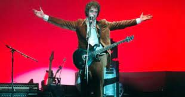
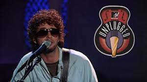
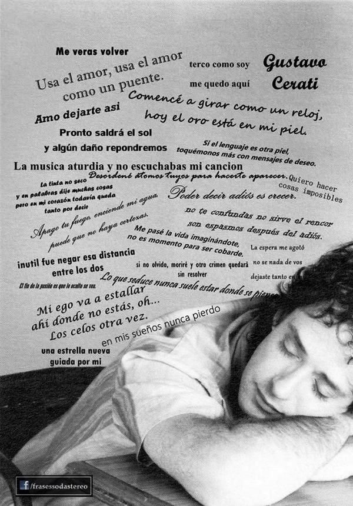
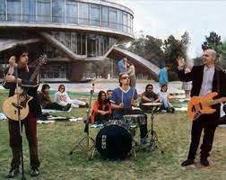
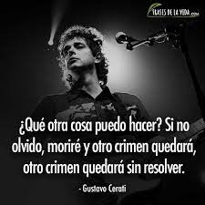
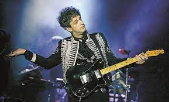

videos y recitales
Conciero river plate 1997
" Ella durmió al calor de las masas Y yo desperté queriendo soñarla Algún tiempo atrás pensé en escribirle Que nunca sorteé las trampas del amor De aquel amor De música ligera Nada nos libra Nada más queda No le enviaré cenizas de rosas Ni pienso evitar un roce secreto De aquel amor De música ligera Nada nos libra Nada más queda De aquel amor De música ligera Nada nos libra Nada más queda Nada más... Nada más queda Nada más queda Nada más queda Nada más queda "
Unplugged MTV
Ahí va la tempestad Ya parece un paisaje habitual Un árbol color sodio Y la caída de un ángel eléctrico Oh, tengo estática y no querría lastimarte de nuevo Volví solo y cargado por la caída de otro ángel eléctrico Enredado en cables Estoy al filo de la resignación Debe ser el hábito De esperar que algo quiebre el unísono Un nuevo acorde te hace mirarme a los ojos Aún tengo al sol para besar tu sombra Hoy caí al dejarte sola Ya pagué por quebrar la calma
puente
Hoy te busqué En la rima que duerme Con todas las palabras Si algo callé Es porque Entendí todo Menos la distancia Desordené átomos Tuyos para hacerte Aparecer Un día más, un día más Arriba el sol Abajo el reflejo Ve cómo estalla mi alma Ya estás aquí Y el paso que dimos Es causa y es efecto Cruza el amor Yo cruzaré los dedos Y gracias por venir Gracias por venir Adorable puente Se ha creado entre los dos Cruza el amor Yo cruzaré los dedos Y gracias por venir Gracias por venir Adorable puente Cruza el amor Cruza el amor Por el puente Usa el amor Usa el amor Como un puente
zoom
Quiero un zoom anatómico Quiero el fin del secreto Entre tus labios de plata Y mi acero inolvidable Quiero un loop Protagónico Pruébame y verás Que todos somos adictos A estos juegos de artificio Voy a hacerte un macro porno intenso Lo que seduce Nunca suele estar Donde se piensa Zoom Por aquí ya estuve Te largas a reír Pues con mi zoom Dame un zoom Luz, cámara y acción
crimen
La espera me agotó No sé nada de vos Dejaste tanto en mí En llamas me acosté Y en un lento degradé Supe que te perdí ¿Qué otra cosa puedo hacer? Si no olvido, moriré Y otro crimen quedará Otro crimen quedará Sin resolver Una rápida traición Salimos del amor Tal vez me lo busqué Mi ego va a estallar Ahí donde no estás Oh, los celos otra vez ¿Qué otra cosa puedo hacer? Si no olvido, moriré Y otro crimen quedará Otro crimen quedará Sin resolver No lo sé Cuánto falta, no lo sé Si es muy tarde, no lo sé Si no olvido, moriré ¿Qué otra cosa puedo hacer? ¿Qué otra cosa puedo hacer? Ahora sé lo que es perder Y otro crimen quedará Otro crimen quedará Sin resolver
Ultimo recital de Gustavo
Un lago en el cielo Quiero ser suave Para evitar tu dureza Apago tu fuego Enciende mi agua Puede que no haya certezas Vamos despacio Para encontrarnos El tiempo es arena en mis manos Sé por tus marcas Cuánto has amado Más de lo que prometiste Hoy te apuré No estaba tan sensible Son espejismos que aumentan la sed Si adelanté No me hagas caso A veces no puedo con la soledad Vamos despacio Para encontrarnos El tiempo es arena en mis manos Sé por tus marcas Cuanto has dejado Para olvidar lo que hiciste Sentir algo que nunca sentiste Sos el paisaje más soñado Y sacudiste las más sólidas tristezas Y respondiste cada vez que te he llamado Vamos despacio Para encontrarnos El tiempo es arena en mis manos Un lago en el cielo Es mi regalo Para olvidar lo que hiciste Y sentir algo que nunca sentiste Y hacerte sentir Algo que nunca sentiste